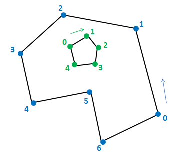

|
The IBlob interface provides details about the blob’s segmentation image and contour lines.
Segmentation Image Data
The following parameters describe the segmentation image of a detected blob:
| • | Segmentation image – the black-and white segmentation image, with the blob pixels in white. Use the QuerySegmentationImage function to access the segmentation image. |
| • | Extremity points – the left-most, right-most, top-most, bottom-most, center and closest (to the sensor) points of the segmentation image. Use the QueryExtremityPoint function to query for each point. If the stabilizer is enabled, the extremity points are smoothed to be more stable, and their motion smoother. No guarantee to be located precisely on the contour line. |
| • | Pixel count – the number of pixels in the segmentation image. Use the QueryPixelCount function to retrieve the number of pixels. |
Contour Data
Each blob has an external contour line, and optionally one or more internal contour lines, depending on the blob’s shape. Each contour line is represented by a series of points. Drawing a straight line between each two consecutive points creates a polygon, which is an approximation of the contour line. The larger the configured minimal contour size, the more detailed the contour line is.
Outer contour lines (i.e. external borders) are defined by an array of points in counter-clock-wise order. Inner contour lines (i.e. "holes" in the mask), if any, are defined by arrays of points in clock-wise order.
Figure 25 illustrates how contour points are ordered.

Figure 25: Point Order for Outer and Inner Contours
The following parameters define the contour lines:
| • | Number of contours – the total number of outer and inner contour lines identified for the blob. Use the QueryNumberOfContours function to get the value. |
| • | Contour size – the number of points in the contour line. Use the QueryContourSize function to get the value. |
| • | Contour points – the array of contour points. These are 2D points, expressed in X and Y pixel coordinates. Use the QueryContourPoints function to access the points. |
| • | Inner/Outer flag – whether the specific contour line is external or internal. Use the IsContourOuter function to retrieve the data. |
|